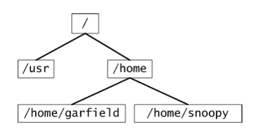
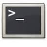
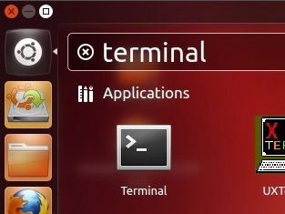
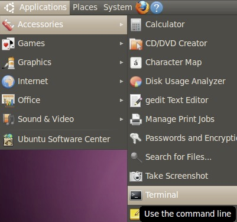
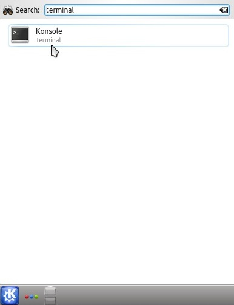

Exercises Linux Tutorial – Part 1
Stefan Wyder Oct 2013
URPP Evolution
University of Zurich
Using the shell for the first time
If you have never used the shell before, go to the Appendix to learn how to launch it.
In case you are running Ubuntu in VirtualBox and it’s the first time you are using Linux spend a couple of minutes to explore the graphical desktop environment: try to see which programs are installed, look at the folder structure etc.
Exercise 1: basic file and directory manipulation
(this exercise is from the von Mering group / ILMS)
The UNIX filesystem is laid out as a hierarchical tree structure where a directory can have many child directories, but only one parent directory. The top-level directory is known as the root (designated by a slash '/').
Iron ration when working with Files/Directories
|
Command |
Meaning |
|
ls |
List files and directories |
|
ls -a |
List all files and directories |
|
cd directory |
Change to directory |
|
cd |
Change to home directory |
|
cd ~ |
Change to home directory |
|
cd ~/software |
Change to a subfolder of your home directory |
|
mkdir |
Make a directory |
|
cp |
Copy a file/directory |
|
rm |
Delete a file/directory |
Once the Terminal is open follow the commands below:
|
$ cd |
change directory to your home directory |
|
$ Cd |
Doesn’t work, Linux commands are case-sensitive! |
|
$ pwd |
prints the current directory (print working directory) |
|
$ ls –l |
ls means list, -l means long; this command lists all files and directories in the current directory |
|
$ mkdir tmp |
make directory; the command creates the directory “tmp” in your home directory Here we use a relative path, we would have gotten the same result with the absolute path: mkdir ~/tmp |
|
$ cd tmp |
brings you to your newly created directory tmp |
|
$ pwd |
you can see that your current working directory changed |
|
$ cd .. |
move one level up |
|
$ ls -l |
you should see the newly created tmp directory |
|
$ nano tmp/poem.txt |
start editing file tmp/poem.txt |
|
http://tinyurl.com/6xvr972 |
open web page and copy/paste the poem to the poem.txt file in your nano editor |
|
ctrl+x |
press ctrl and then x (Exit) to quit the nano editor, press y to confirm saving and return to the shell |
|
$ head tmp/poem.txt |
displays first 10 lines of the poem |
|
$ tail tmp/poem.txt |
displays last 10 lines of the poem |
|
$ man head |
use
man to get more
information about the head command; use the correct parameter to
display not only the first 10 lines of the poem but the entire
poem To quit: q |
|
$ less tmp/poem.txt |
less is a convenient command for displaying file contents (“less is more”; more is another command people used a lot before less was introduced) |
|
$ grep house tmp/poem.txt |
if you are searching for something, you can use grep text to display only lines matching text |
|
$ wc tmp/poem.txt |
displays the number of lines in the file |
|
$ wc -w tmp/poem.txt |
counts the words in the file |
|
$ cp tmp/p + TAB |
if you start typing “cp tmp/d” and then press TAB, what happens? |
|
$ cd ~/tmp |
change
current directory to directory tmp |
|
$ cp poem.txt poem2.txt |
cp is used to copy the file data.tab to file data2.tab |
|
$ ls -l |
you should see 2 files now |
|
$ mv poem2.txt poem_v2.txt |
Rename the file (also for moving it to another directory) |
|
$ cd .. |
go back one level |
|
$ cp -Rp tmp poems |
you just made a copy of the entire directory tmp to poems |
|
$ ls -l |
you should see both tmp directories |
|
$ ls tmp/*.txt |
you can use the wildcard (*) to list files and directories that match your expression |
|
$ rm tmp/poem*.txt |
rm removes files and folders |
|
$ rmdir tmp |
finally we remove the bio directory |
|
Be careful! |
rm and mv are potentially very dangerous commands as you can lose your files by deleting or overwriting them without notice! In the shell there is no trash bin, you will not get the files back. In the worst case you can delete all files you ever created in your home directory and subdirectories with the recursive -R options. Better use rm -i , which asks you to confirm the deletion of each file. For deleting directory one can use rmdir that only deletes empty directories. |
Of course as long as we are working on single files we can also perform file/directory operations using the Linux or Mac OS graphical interface. But when we log in to a server we do not have a graphical user interface and we need to know how to move around using the shell.
Exercise 1b: Repetition of absolute and relative paths
(this exercise is from Tobias Rausch www.embl.de/~rausch/primer.pdf )
This exercise is to repeat absolute and relative paths, as experience shows that many beginners initially struggle with the directory structure. If you feel comfortable to move around you can skip it.
Note to Mac OS X Users: Some commands of this exercise will not work under Mac OS X as is. Exercise 1b has been designed for the folder structure of Linux system. Unfortunately the folder structure of your Mac does NOT follow that of a Linux/Unix system. Your home directory is located in /Users/username (e.g. /Users/swyder/ ) but if you replace "/home/garfield/" with "~" the following exercises should work.
The Linux file system is organized as a tree. The root of the tree is simply labeled as /. A first level subdirectory of / is, for instance, /home or /user. The home directory contains all user directories, such as /home/garfield or /home/snoopy.

The command that shows the directory you are currently in is pwd (stands for print working directory). Let us assume garfield is in its home directory /home/garfield and wants to create two subdirectories work and freetime. The commands to achieve that are
$ mkdir work
$ mkdir freetime
These commands use so-called relative paths because garfield creates the directories where he is currently in, which is hopefully /home/garfield. Alternatively, garfield can use absolute paths.
$ mkdir /home/garfield/work
$ mkdir /home/garfield/freetime
An absolute path describes the whole path starting from the root through all subdirectories.
Since our workaholic garfield has no freetime we only create two further subdirectories underneath /home/garfield/work
$ mkdir ./work/sleep
$ mkdir /home/garfield/work/food
The former command uses a relative path whereas the later command uses an absolute path. Note that a simple . always specifies your current directory. The command cd allows you to move through the directory tree.
$ cd ./work/
$ pwd
$ cd /home/garfield/freetime
$ pwd
$ cd ..
$ pwd
Whereas a single . specifies your current directory a double .. specifies the parent directory. With these operations one can specify a very complicated command that does absolutely nothing.
$ cd ./work/./ sleep /../ sleep /../../
Finally, there is the ls command that shows the directory content and the rmdir command that removes a directory.
$ ls
$ ls /home/garfield/work
$ rmdir /home/garfield/freetime
$ ls /home/garfield
Exercise 2: Using the terminal efficiently
All the commands you have used recently are stored in the history and can be retrieved to minimize typing. TAB completion also avoids typing.
|
$ history |
shows all the commands you have used recently |
|
arrow keys |
Move in history, relaunch command by pressing Enter |
|
$ ctrl-r |
Search in history, eg. type "grep" to retrieve your last grep command. To keep it in the command line, press the -> arrow key. To look for the second last etc press ctrl-R multiple times |
|
TAB completion |
completes program_path/file_name by pressing the TAB key If there are multiple options, they will be listed |
- What were the options of your last grep command? wc command?
- Explore the the files and subdirectories of the root directory: ls / + TAB
- TAB completion also works with commands: list all commands starting with "g", "gr", "gre"
Exercise 3: Working with text files
Linux has very powerful tools to work with text files. Its no problem to work on your laptop with 10-20Gb files which are sometimes seen in Next-Generation-Sequencing. Some people actually start using the Linux shell because their files are too large to be opened with Excel. Furthermore, working with the shell improves the reproducibility (compared with manual reformatting / selection in Excel) and reduces the error rate.
First lets prepare the data files
We use a genome annotation file for the model plant Arabidopsis thaliana – The file is in gtf format which is a standard format to describe genome annotations
Open a web browser and go to the following page
ftp://ftp.arabidopsis.org/home/tair/Genes/TAIR10_genome_release/TAIR10_gff3
Download the file TAIR10_GFF3_genes.gff to your harddisk (Save Link under …)
Create a new directory "Arabidopsis_annotation" in your home and move the file into the new directory
Extract the first 100 lines into a new file At.gff:
head -100 TAIR10_GFF3_genes.gff > At.gff
Look at the file, the file is tab-separated with 9 columns/fields:
<chromosome> <source> <feature> <start> <end> <score> <strand> <frame> <group>
Non-available values are denoted with a ".". You find a detailed format description under http://genome.ucsc.edu/FAQ/FAQformat.html#format3
Make a second file using the nano editor:
nano indA.txt
then type on 2 separate lines:
mRNA
three_prime_UTR
quit
the editor
Type all commands to find out what they do.
grep – search pattern/text
grep searches are case-sensitive by default.
|
$ grep "exon" At.gff |
The command grep searches each line of a file for a certain pattern and outputs all matching lines. |
|
$ grep –v "exon" At.gff |
Shows only lines which do NOT match the search pattern |
|
$ grep –f indA.txt At.gff |
Get search patterns from a file, and searches them all |
|
$ grep –w "Chr1" At.gff |
Only whole words, would e.g. exclude Chr10 |
|
$ grep -i "CHR1" At.gff |
Case-insensitive search |
|
$ grep --color "protein" At.gff |
Colors the search pattern in the result |
|
$ grep "3760\t5630" At.gff |
Searching
for 2 words separated by a tab "\t" |
sort
GNU sort is flexible and very space efficient. Its possible to sort a 20Gb file with less than 2Gb memory. It is not trivial to implement so powerful a sort by yourself.
|
$ sort At.gff
|
The command sort can be used to sort a file according to numerical values or dictionary order. Dictionary order is default. |
|
$ sort −k4,4g At.gff |
-k indicates the key (column to be sorted), g denotes numerical sorting |
|
$ sort –k4,4 At.gff |
For comparison: sort column 4 in dictionary order |
|
$ sort –k4,4gr At.gff |
Sort column 4 as numbers in descending order (r:reverse) |
|
$ sort −k1,1 –k4,4gr At.gff |
We can define several sorting keys. Sort column 1 in dictionary order, if identical, sort column 4 as numbers in descending order. This command is often used to sort a genomic file according to chromosome (column 1) and position (column 4). |
cut – extract columns
Default field separator: single TAB
|
$ cut -f 1 At.gff |
The command cut can be used to extract columns from a file. Here we extract column 1 |
|
$ cut -f 2 At.gff |
Now we extract column 2 |
|
$ cut −f 1,3 At.gff |
|
|
$ cut -f1-3,6,7- At.gff |
cut out the 1st, 2nd, 3rd, 5th, 7th and following columns |
|
$ cut -d" " -f 3 input.txt |
Cut out column 3 with columns separated by a single space |
tr – replace/delete text
tr is special as it only reads from standard input (i.e. you can not give it a filename to read from). You can try tr like this
echo "hello hello" | tr e a
|
$ tr |
The command tr can be used to replace/delete characters |
|
$ tr e a |
Replaces all “e”s with “a”s |
|
$ tr –d e |
Deletes all “e”s |
|
$ tr –s ello i |
|
wc – count lines/words
|
$ wc At.gff |
The wc command shows the line, word and byte count for a file |
|
$ wc -l At.gff |
Shows number of lines only |
Exercise 4: pipes and redirecting input / output
(this exercise is from the von Mering group / ILMS)
The pipe ('|') operator is used to create concurrently executing processes that pass data directly to one another:
$ command1 | command2 | command3 …
The standard output of command1 is redirected (piped) to the standard input of command2, etc.
Pipes are useful for combining system utilities to perform more complex functions. For example (On Mac OS X, press alt+7 for |):
$ cd
$ cd poems
$ cat poem.txt | grep "House" | wc
creates three processes (corresponding to cat, grep and wc) which execute concurrently. As they execute, the output of the cat process is passed on to the grep process which is in turn passed on to the wc process. wc displays its output on the screen.
Redirecting input and output: The output from programs is usually written to the screen, while their input usually comes from the keyboard (if no file arguments are given). To redirect standard output to a file instead of the screen, we use the > operator:
|
$ echo hello |
displays “hello” on the screen |
|
$ echo hello > hello.txt |
writes “hello” to the file |
|
$ cat hello.txt |
displays contents of file; you should see “hello” |
In this case, the contents of the file data.tab will be overwritten if the file already exists. If instead we want to append the output of the echo command to the file, we can use the >> operator:
|
$ echo hello >> hello.txt |
appends “hello” to the end of the file |
|
$ cat hello.txt |
displays contents of file |
Standard input can also be redirected using the < operator, so that input is read from a file instead of the keyboard:
$ wc < hello.txt
You can combine input redirection with output redirection, but be careful not to use the same filename in both places. For example:
$ wc < hello.txt > hello_counts.txt
Exercise 5: Piping together text processing commands
In
exercise 4 we have learnt to combine multiple commands by using
pipes. To check if a command works as expected (and to check
intermediary steps) you can pipe the results to less or head like
this:
command | command | less
Use the complete genome annotation file TAIR10_GFF3_genes.gff for Arabidopsis from the exercise 3.
Count the number of lines in the file
Sort the file according to strand
How many different chromosomes does it contain?
How many genes, mRNAs?
Which genes encodes an exon in Chromosome 1 at position 3535383-3538439 ?
Which types of RNAs are annotated? (tip: use multiple cut and use "\;" as separator)
Exercise 6: More working on text files
uniq – report or filter out repeated lines in a file
Make sure the input of uniq is sorted!
|
uniq file |
eliminate duplicate lines |
|
cut –f 1 At.gff | sort | uniq -c |
uniq –c counts the number of occurences of sorted lines. Here we extract values of column 1, sort them and count them |
|
uniq -d |
shows lines that are repeated in the output |
awk
awk is a simple programming language dedicated to text processing. Although you can achieve all its functionality e.g. with all-purpose programming languages like python/perl awk is often simpler. We will not learn awk now but use it for some handy one-liners.
|
awk '{print $1,$2,$4,$5}' At.gff |
awk splits a tab- or space-delimited file into variables. $0 contains the full input line, $1 column 1, $2 column 2, and so on. |
|
awk '{print $4,$2,$3,$1}' At.gff |
So to switch column 1 and 4 we simply type. |
|
awk '{sum=$4+$5;print sum,$0}' At.gff |
Print out sum of columns 4 and 5 before the line |
|
awk '{$2=$4+$5;print}' At.gff
|
Replace column 2 by the sum of columns 4 and 5 |
|
awk 'BEGIN {OFS="\t"} {print $4,$2,$3,$1}' At.gff |
We want to create tab-separated output (default is space-separated output) |
|
awk 'BEGIN {FS=",";OFS="\t"} {print $4,$2,$3,$1}' input.file |
We have to change the input field separator as the input file indB.txt is comma-separated (“,”) |
|
awk ‘$4>1000 && $5<6000 {print $0}’ At.gff |
Shows all lines for positions between 100 and 200 |
|
awk '{SUM+=$4} END {print SUM}' input.txt |
Print out the sum of column 4 over the whole file |
|
awk '{SUM+=$4} END {print SUM/NR}' At.gff |
Print out the mean of column 4 |
|
awk '/gene/ {c++} END {print c}' At.gff |
Count lines containing “gene” |
|
awk '$4>max {max=$4; maxline=$0} END {print maxline}' At.gff |
Print the maximum value of column 4 observed in the file |
|
awk 'BEGIN{while((getline<"file1.txt") >0)lin[$1]=$0}$1 in lin {print $0"\t"lin[$1]}' file2.txt > output.txt |
join two files on column 1 |
|
awk 'BEGIN {FS="\t"} {print NF}' At.gff | sort | uniq -c |
Handy to check proper formatting – same number of columns over all lines. |
Even more useful commands
Explore using the man command and google searches
|
sort -u |
Make unique (Keep only of each kind) |
|
comm |
Compare files, can be used to identify shared and unique elements (for Venn diagrams) |
|
paste |
Merge corresponding or subsequent lines of files |
|
join |
Join files on common fields |
|
diff |
Compare files line by line. See also diff3 |
Use the complete genome annotation file TAIR10_GFF3_genes.gff for Arabidopsis from the exercise 3.
Find the gene with the highest number of exons (79)
How many genes are not spliced?
Extract exons encoded on Chromosome 3 on positions 10000 – 30000
How many genes are encoded by the region?
Advanced: More examples
|
awk 'BEGIN{while((getline<"file1.txt") >0)lin[$1]=$0}$1 in lin {print $0"\t"lin[$1]}' file2.txt > output.txt |
join two files on column 1 |
|
awk 'BEGIN {OFS="\t"} {print NF}' indA.txt | sort | uniq -c |
Handy to check proper formatting of a tab-delimited file (e.g. before importing it into R) – same number of columns over all lines. |
|
sort -k2.3n input.txt |
sort starting from the 3rd character at column 2, as numbers |
|
(echo hello; echo world; cat file1.txt) > output.txt |
Use brackets to redirect multiple files together |
Appendix
Using the shell for the first time
If you have never used the shell before, go to Appendix to learn how to launch it.
On Mac OS X
Open the Terminal Application by going to Spotlight (magnification glass in the upper right corner of the screen) and searching for “Terminal”. Open it by clicking on it.
To keep it in the dock for the future, put the cursor on the “Terminal” icon,

press ctrl + click on it, then choose <Options> and <Keep in Dock>. Next time you can start the Terminal by simply clicking on its icon in the dock.
On Windows
You are supposed to have installed Ubuntu in a Virtual Machine using VirtualBox following the instructions below. Once Ubuntu is working, jump to the <On Linux> section further below.
Instructions to Create an Ubuntu Virtual Machine (only required for Windows laptops)
Follow the detailed instructions under navet.ics.hawaii.edu/~casanova/VirtualBoxUbuntuHowTo.html or askubuntu.com/questions/142549/how-to-install-ubuntu-on-virtualbox
In short:
- First install VirtualBox for Windows, check www.virtualbox.org for download instructions.
- Then download the iso image of Ubuntu Desktop 12.04 LTS from www.ubuntu.com/download/desktop
- If you are unsure about your architecture choose 32bit
- The file should be called ubuntu-12.04.3-desktop-i386.iso
- Install Ubuntu in Virtual Box
On Linux
In Ubuntu (Unity), just click the Ubuntu logo and start typing terminal.

In Ubuntu (classic Gnome), it's in Applications > Accessories > Terminal

In Kubuntu (or KDE)

System information, processes and other useful commands
|
uname -a |
display system information |
|
man command |
display manual page of command |
|
df -h |
list mounted disks with available space |
|
du -h path |
show space usage |
|
top |
display running processes |
|
kill -9 pid |
kill process |
File and folder manipulation, compression
|
pwd |
display current folder |
|
ls -l path |
list files and folders |
|
cd path |
change folder to path |
|
cd ~ |
change folder to home folder |
|
mkdir name |
make folder |
|
rmdir name |
remove folder |
|
cp source dest |
copy file/folder and all its contents |
|
less filename |
display file content |
|
wc filename |
count number of lines in file |
|
head filename |
shows first few lines of file |
|
tail filename |
shows last few lines of file |
|
gzip filename |
compress file with gzip (adds .gz extension) |
|
gunzip filename |
decompress file (removes .gz extension) |
|
tar xfz filename.tar.gz |
decompress files from tar.gz archive |
|
tar zcvf archive.tar.gz folder_to_compress |
creates archive.tar.gz |
|
unzip filename.zip |
unzip archive |
Network and file transfer
|
wget URL |
download file (html page) and save to current folder |
|
ssh username@host |
remote login to host with username |
|
sftp username@host |
remote login to host with username and transfer files |
“vi” editor
|
$ vi filename |
start editing file with vi |
|
i |
switch to “insert” mode |
|
ESC |
switch to “command” mode |
|
:w |
save |
|
:q |
quit |
|
:x |
save and quit |
|
/<pattern> |
search for pattern, <n> gives you the next match |
|
:q! |
quit without saving changes |